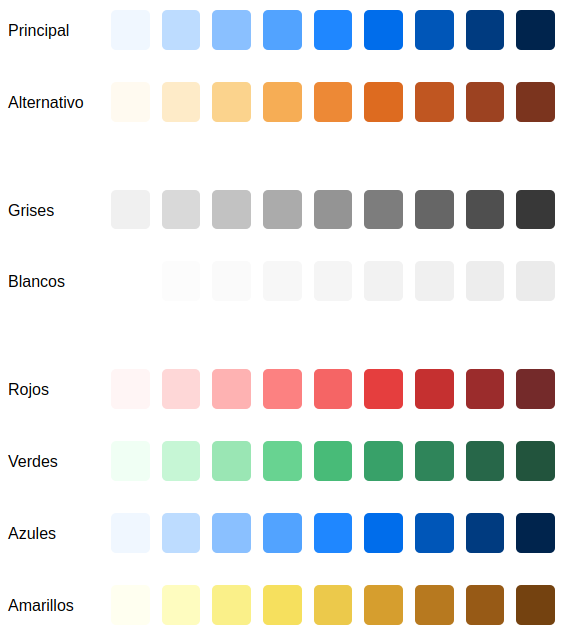
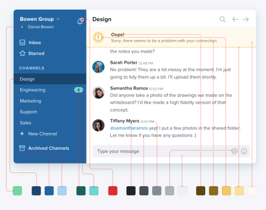

Colores
Los colores de pueden definir en CSS con formato RGB o HSL.
Mas información de HSL en Descripción del modelo de color HSL (Hue, Saturation, Ligthness).
Y aquí una herramienta para transformar de RGB a HSL.
Necesitas muchos colores:

Pero no para hacer cosas así:

La gama de blancos y grises la usas para hacer las cosas muy claras u oscuras.
La gama del color principal obviamente la usas para casi todo, mientras que la gama del color alternativo la usas para destacar algo.
Por último, los colores rojo, verde, amarillo, etc, son para cosas concretas que necesitan ese color. Por ejemplo para avisar del borrado de algo usar el rojo.
Para crear variaciones de un color usa:
- Data Viz Color Palette Generator (for Charts & Dashboards)
- Color Scheme Generator
- colorxcolor:Permite ajustar las curvas de saturación y luminosidad.
- Paletas de colores:
Para crear el color alternativo usa: Color Scheme Designer 3